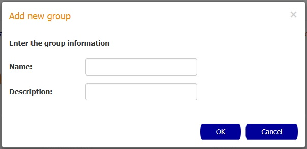

How to create a new custodian group
In order to create a new custodian group you need to click the New button.

In the New Custodian Group popup enter the name and description for the new group and then confirm the action by pressing the OK button.
How to delete custodian groups
In order to delete custodian groups you need to select the checkboxes of the groups that you want to delete and
click the Delete button.
After this, the Delete Groups popup is going to appear with a warning message and the name of the groups that were selected to be deleted. Click the OK button to confirm the action
How to display a custodian group details
In order to display the group details you need to click the desired group in the table. After the click the Custodian Group Details page is going to be displayed.